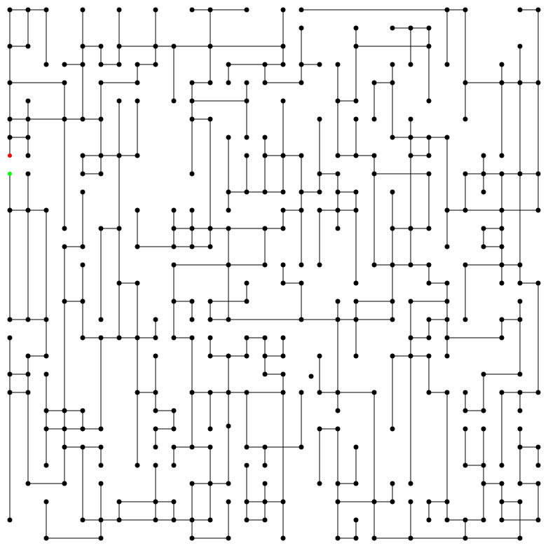
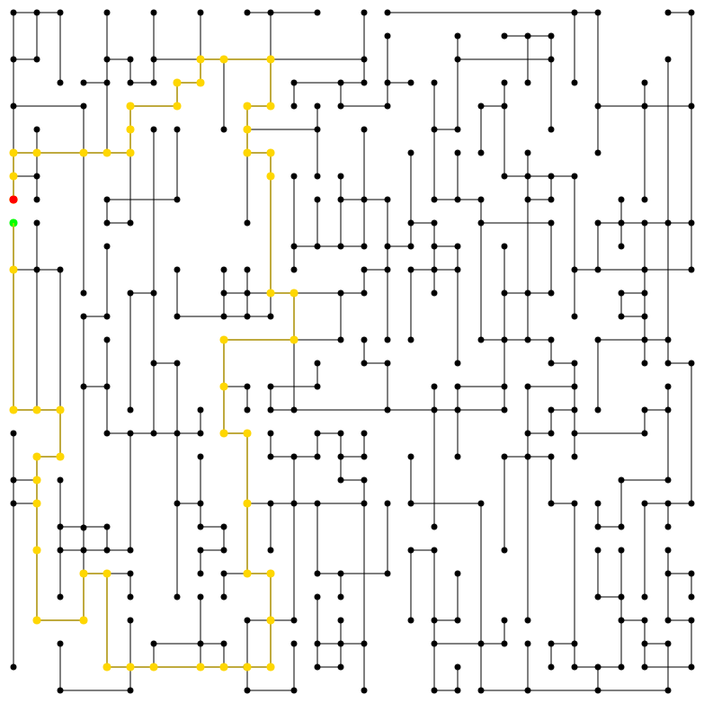

Saturnday, October 28¶
After my friend tried the program and completely screwed it up, I added some notice on how big the number should be for “generating a maze” field if someone has no idea what those fields mean. In addition, I also:
- Added support for exporting the maze into an svg image
- Added contents display control
- Fixed a minor bug on maze generation
Its kind of funny how I spent so much time on writing code for generating a random maze, even though the project is “maze solver.”
With the svg image support now, I can send the maze to a lasercutter.
Try this one, start from the green dot and end at the red dot:

The shortest way is this:

VisualizedMaze.py¶
#!/usr/local/bin/python3.6
# coding=utf-8
from Maze import Maze, NoSolution
from DataStructures import Node
from AbstractBaseClasses import BaseNode
import tkinter as tk
import tkinter.ttk,tkinter.filedialog
import math, random, warnings
# Canvas Tags:
# cp: coordinate plane
# highlight
# noden: node number
# coordinate: coordinate when mouse enters the canvas
# distance: distance display on each edge
class VisualizedMaze(tk.Tk, Maze):
# TODO: add a function to scale the coordinate plane
def __init__(self, control=True):
super().__init__()
self.attributes('-topmost', True)
self.bind('<FocusIn>',lambda event: (self.attributes('-topmost',False),self.unbind('<FocusIn>')))
self.title('Maze Solver')
Maze.__init__(self)
self.coordinate_plane = CoordinatePlane(self)
self.controls = Controls(self)
self.coordinate_plane.create_axes()
self.create_origin()
self.coordinate_plane.grid(row=0, column=0)
tk.ttk.Separator(self, orient='vertical').grid(row=0, column=1, sticky='ns')
self.controls.grid(row=0, column=2, padx=20, sticky='nsew')
if not control:
self.hide_controls()
def hide_controls(self):
self.controls.grid_forget()
def create_origin(self):
self.origin = self.add_node(0, 0)
def add_node(self, x, y, isDeadEnd=False, color='black', update=True,show_number=True):
n = Maze.add_node(self, x, y,
isDeadEnd) # x and y is in respect to the logical coordinate plane, not to tk.Canvas
x += self.coordinate_plane.width // 2
y = self.coordinate_plane.height // 2 - y
self.coordinate_plane.create_oval(x + 3, y + 3, x - 3, y - 3, fill=color, outline=color,tag='node')
self.coordinate_plane.create_text(x + 15, y - 10, text='n%d' % n.index, fill='gray30',tag='node_num',state='normal' if show_number else 'hidden')
if update: self.coordinate_plane.update_idletasks()
return n
def connect(self, n0: int, n1: int, color='black', show_distance=True, update=True):
if super().connect(n0, n1):
x0 = BaseNode.registry[n0].x + self.coordinate_plane.width // 2
x1 = BaseNode.registry[n1].x + self.coordinate_plane.width // 2
y0 = self.coordinate_plane.height // 2 - BaseNode.registry[n0].y
y1 = self.coordinate_plane.height // 2 - BaseNode.registry[n1].y
distance = self.calculate_distance(x0, y0, x1, y1)
self.coordinate_plane.create_line(x0, y0, x1, y1, fill=color)
self.coordinate_plane.create_text(*self.calculate_midpoint(x0, y0, x1, y1), text=str(distance),
fill='royal blue', tag='distance',state='normal' if show_distance else 'hidden')
if update:
self.coordinate_plane.update_idletasks()
return True
else:
return False
@staticmethod
def calculate_distance(x0: int, y0: int, x1: int, y1: int) -> int:
return round(math.sqrt((x0 - x1) ** 2 + (y0 - y1) ** 2))
@staticmethod
def calculate_midpoint(x0: int, y0: int, x1: int, y1: int) -> (int, int):
return (x0 + x1) // 2, (y0 + y1) // 2
def search_and_highlight(self, n0: int, n1: int):
try:
self.coordinate_plane.highlight_nodes(self.search_route(BaseNode.registry[n0], BaseNode.registry[n1]))
except NoSolution:
self.coordinate_plane.create_text(self.coordinate_plane.width // 2, self.coordinate_plane.height // 2,
text="No Solution Found", tag='highlight', fill='red',
font=("Times", 36, 'bold'))
def randomly_generate_and_connect(self, n):
with warnings.catch_warnings(): # temporarily suppress warnings from connecting Nodes
warnings.filterwarnings('ignore')
width = self.coordinate_plane.width // 2 - 20
height = self.coordinate_plane.height // 2 - 20
for i in range(n):
self.add_node(random.randrange(0, width) * random.choice([1, -1]),
random.randrange(0, height) * random.choice([1, -1]))
for r in range(2):
t = 0
s = self.connect(i + 1, random.randint(0, len(BaseNode.registry) - 1))
while not s:
s = self.connect(i + 1, random.randint(0, len(BaseNode.registry) - 1))
if t > 3: break
t += 1
def generate_maze(self, n, s=10, c=0.55, show_distance=True, update=True,show_node_num=True):
"""
:param n: number of nodes to be generated
:param s: size of the maze. The function will run infinitely if n>s**2
:param c: chance of two nodes connecting each other when they don't have to
:param update: Update canvas after each drawing
:param show_distance: show distance on the coordinate plane between two connected nodes
:return: None
This function generate a maze on the coordinate plane so that
1. there is no isolated nodes
2. there is no diagonal connection between nodes
3. there is no overlapping edges
"""
_n = n
size = s
zoom = (
self.coordinate_plane.height - 20) // size # scale the maze to be size*size, height should be the same as min(height,width)
for i in range(n): # add n of nodes to the map
flag = False
while not flag:
x = random.randrange(0, size) - size // 2
y = random.randrange(0, size) - size // 2
if Node.find_node(x * zoom, y * zoom) < 0:
flag = True
self.add_node(x * zoom, y * zoom, update=update,show_number=show_node_num)
# The part below is super inefficient and badly written but I DON'T CARE
dict_x = {} # stored value will be x:y
dict_y = {} # stored value will be y:x
for x, y in Node.map_origin.keys():
try:
dict_x[x].append(y)
dict_x[x].sort()
except KeyError:
dict_x[x] = [y]
try:
dict_y[y].append(x)
dict_y[y].sort()
except KeyError:
dict_y[y] = [x]
to_be_connected = set() # in a tuple (n0,n1) where n0 and n1 are index number of a node
nodes_with_edge = set()
for x in dict_x:
i = 0
while i < len(dict_x[x]) - 1:
y0 = dict_x[x][i]
y1 = dict_x[x][i + 1]
if (not Node.find_node(x, y0) in nodes_with_edge and not Node.find_node(x,
y1) in nodes_with_edge) or random.random() <= c: # to ensure each node has at least one edge
n0 = Node.find_node(x, y0)
n1 = Node.find_node(x, y1)
to_be_connected.add((n0, n1))
nodes_with_edge.add(n0)
nodes_with_edge.add(n1)
i += 1
for y in dict_y:
i = 0
while i < len(dict_y[y]) - 1:
x0 = dict_y[y][i]
x1 = dict_y[y][i + 1]
if (not Node.find_node(x0, y) in nodes_with_edge and not Node.find_node(x1,
y) in nodes_with_edge) or random.random() <= c: # to ensure each node has at least one edge
n0 = Node.find_node(x0, y)
n1 = Node.find_node(x1, y)
to_be_connected.add((n0, n1))
nodes_with_edge.add(n0)
nodes_with_edge.add(n1)
i += 1
# Try to find intersections in the maze that is not a node
hlines = {} # in format y:(x0,x1) where x0<x1
vlines = {}
for n0, n1 in to_be_connected:
n0 = Node.registry[n0]
n1 = Node.registry[n1]
if n0.x == n1.x: # this is a vertical line
try:
vlines[n0.x].append((n0.y, n1.y) if n0.y < n1.y else (n1.y, n0.y))
except KeyError:
vlines[n0.x] = [(n0.y, n1.y) if n0.y < n1.y else (n1.y, n0.y)]
else: # horizontal
try:
hlines[n0.y].append((n0.x, n1.x) if n0.x < n1.x else (n1.x, n0.x))
except KeyError:
hlines[n0.y] = [(n0.x, n1.x) if n0.x < n1.x else (n1.x, n0.x)]
for x in vlines:
for v in vlines[x]:
y0, y1 = v # y0<y1
for y in hlines:
if y0 <= y <= y1:
for h in hlines[y]:
x0, x1 = h
if x0 <= x <= x1: # this two lines intersect at (x,y)
if Node.find_node(x, y) < 0:
n = self.add_node(x, y, update=update,show_number=show_node_num)
to_be_connected.add((n.index, Node.find_node(x, y0)))
to_be_connected.add((n.index, Node.find_node(x, y1)))
to_be_connected.add((n.index, Node.find_node(x0, y)))
to_be_connected.add((n.index, Node.find_node(x1, y)))
dict_x={}
dict_y={}
for x, y in Node.map_origin.keys():
try:
dict_x[x].append(y)
dict_x[x].sort()
except KeyError:
dict_x[x] = [y]
try:
dict_y[y].append(x)
dict_y[y].sort()
except KeyError:
dict_y[y] = [x]
def sort_key(t): # sort the edges by length
n0 = Node.registry[t[0]]
n1 = Node.registry[t[1]]
return self.calculate_distance(n0.x, n0.y, n1.x, n1.y)
with warnings.catch_warnings():
warnings.filterwarnings('ignore')
for n0, n1 in sorted(to_be_connected, key=sort_key):
self.connect(n0, n1, show_distance=show_distance, update=update)
def connect_nearest_manhattan(n: Node) -> bool:
with warnings.catch_warnings():
warnings.filterwarnings('ignore')
possible_y = dict_x[n.x]
loc_y = possible_y.index(n.y)
tc=set() # short for to be connected
if loc_y > 0:
tc.add((n.index, Node.find_node(n.x, possible_y[loc_y - 1])))
if loc_y < len(possible_y) - 1:
tc.add((n.index, Node.find_node(n.x, possible_y[loc_y + 1])))
possible_x = dict_y[n.y]
loc_x = possible_x.index(n.x)
if loc_x > 0:
tc.add((n.index, Node.find_node(possible_x[loc_x - 1], n.y)))
if loc_x < len(possible_x) - 1:
tc.add((n.index, Node.find_node(possible_x[loc_x + 1], n.y)))
for n0,n1 in sorted(tc,key=sort_key):
n0=Node.registry[n0]
n1=Node.registry[n1]
if self.connect(n0.index,n1.index,show_distance=show_distance,update=update): return True
return False
def connect_nearest(n: Node) -> bool:
with warnings.catch_warnings():
warnings.filterwarnings('ignore')
for n0,n1 in sorted(zip(itertools.repeat(n),Node.registry),key=sort_key):
if self.connect(n0,n1,show_distance=show_distance,update=update): return True
return False
import itertools
for node in Node.registry.values(): # Make sure every node is connected to the main maze
try:
self.search_route(node, self.origin)
except NoSolution:
t = 0
flag=connect_nearest_manhattan(node)
while not flag:
try:
node = node.get_edge(random.choice([k for k in node._edges.keys()])).get_other(
node.index) # try to connect to the main maze from its neighbours
flag=connect_nearest_manhattan(node)
except IndexError: # An isolated node. Give up
print('Isolated: Giving up on node'+str(node.index))
break
t += 1
if t > _n:
print('Timeout: Giving up on node' + str(node.index))
break # attempted more than the maze size. Give up.
else:
print("Succeeded: Fixed connection for node"+str(node.index))
for node in Node.registry.values():
if len(node._edges)==2:
if sum(node._edges.keys())==0 or sum(node._edges.keys())==180:
x=node.x+self.coordinate_plane.width//2
y=self.coordinate_plane.height//2-node.y
self.coordinate_plane.delete(self.coordinate_plane.find_enclosed(x+4,y+4,x-4,y-4)[0])
print('Deleted: '+str(node))
class CoordinatePlane(tk.Canvas):
def __init__(self, root: tk.Tk):
self.height = round(root.winfo_screenheight() * 0.9)
self.width = round(root.winfo_screenwidth() * 0.8)
super().__init__(root, width=self.width, height=self.height)
self.bind('<Enter>', self.event_mouse_enter)
self.bind('<Leave>', self.event_mouse_leave)
def create_axes(self, color='gray'):
self.create_line(0, self.height // 2, self.width, self.height // 2, fill=color,tag='cp') # x axis, cp short for coordinate plane
self.create_line(self.width // 2, 0, self.width // 2, self.height, fill=color,tag='cp') # y axis
self.create_text(20, self.height // 2 + 10, text=str(-self.width // 2), fill=color,tag='cp') # x axis labels
self.create_text(self.width - 20, self.height // 2 + 10, text=str(self.width // 2), fill=color,tag='cp')
self.create_text(self.width // 2 - 20, 10, text=str(self.height // 2), fill=color,tag='cp')
self.create_text(self.width // 2 - 20, self.height - 10, text=str(-self.height // 2),
fill=color,tag='cp') # y axis labels
def event_mouse_enter(self, event):
self.bind('<Motion>', self.show_cursor_coordinate)
def event_mouse_leave(self, event):
self.unbind('<Motion>')
self.delete('coordinate')
def show_cursor_coordinate(self, event):
"Display current cursor coordinate on top-right corner"
self.delete('coordinate')
x = round(event.x - self.width / 2)
y = round(self.height / 2 - event.y)
self.create_text(60, 20, text='x=%d, y=%d' % (x, y), tag='coordinate')
if Node.find_node(x,y) >= 0:
self.create_text(60, 40, text='Node %d' % Node.find_node(x,y) , tag='coordinate')
def highlight_single_node(self,n:int,color='gold'):
try:
node=Node.registry[n]
x = node.x + self.width // 2
y = self.height // 2 - node.y
self.create_oval(x + 4, y + 4, x - 4, y - 4, fill=color, outline=color, tag='highlight')
except KeyError:
pass
def highlight_nodes(self, nodes: list, color='gold'):
"This function will highlight every node and its path. It is meant to be used on the return value of search_route"
i = 0
while i < len(nodes):
x = nodes[i].x + self.width // 2
y = self.height // 2 - nodes[i].y
if i != 0:
self.create_oval(x + 4, y + 4, x - 4, y - 4, fill=color, outline=color, tag='highlight')
self.create_line(x, y, previous_x, previous_y, fill=color, tag='highlight')
else:
self.create_oval(x + 4, y + 4, x - 4, y - 4, fill="green", outline="green", tag='highlight')
previous_x = x
previous_y = y
i += 1
self.create_oval(x + 4, y + 4, x - 4, y - 4, fill="red", outline="red", tag='highlight') # Mark the last one
self.update_idletasks()
def remove_highlight(self):
self.delete('highlight')
self.update_idletasks()
def remove_distance(self):
self.delete('distance')
self.update_idletasks()
class Controls(tk.Frame):
def __init__(self, root: VisualizedMaze):
super().__init__(root, width=root.winfo_screenwidth() * 0.2, height=root.winfo_screenheight() * 0.9)
self.create_nodes_control().grid(row=0)
self.create_solution_control().grid(row=2)
#self.create_random_control().grid(row=3)
self.create_maze_generation_control().grid(row=4)
#self.create_debug_control().grid(row=5)
self.create_highlight_control()
self.create_view_controls().grid(row=7)
self.create_export_controls().grid(row=8)
for row in range(9): self.grid_rowconfigure(row, weight=1)
def create_nodes_control(self):
def validation(text):
if text == '': return True
try:
int(text)
except:
return False
else:
return True
self.nodes_control = tk.Frame(self)
tk.ttk.Separator(self.nodes_control, orient='horizontal').grid(row=0, columnspan=10, sticky='ew')
tk.Label(self.nodes_control, text='Nodes Control', font=("Times", 18, "bold")).grid(row=1)
tk.Label(self.nodes_control, text="Create a New Node at").grid(row=2)
validation = self.master.register(validation)
self.add_node_controls = tk.Frame(self.nodes_control)
tk.Label(self.add_node_controls, text="x:").grid(row=0, column=0)
n0 = tk.Entry(self.add_node_controls, width=3, validate='all', validatecommand=(validation, '%P'))
n0.grid(row=0, column=1)
tk.Label(self.add_node_controls, text="y:").grid(row=0, column=2)
n1 = tk.Entry(self.add_node_controls, width=3, validate='all', validatecommand=(validation, '%P'))
n1.grid(row=0, column=3)
print(n0.get())
tk.Button(self.add_node_controls, text='Add',
command=lambda: self.master.add_node(int(n0.get()), int(n1.get()))).grid(row=1, columnspan=10)
self.add_node_controls.grid(row=3)
def validation(text):
if text == '': return True
if text=='-':return True
try:
n = int(text)
except:
return False
else:
if n >= len(BaseNode.registry):
return False
else:
return True
validation = self.master.register(validation)
tk.Label(self.nodes_control, text="Connect Two Nodes").grid(row=4)
self.connection_controls = tk.Frame(self.nodes_control)
tk.Label(self.connection_controls, text="From n").grid(row=0, column=0)
c0 = tk.Entry(self.connection_controls, width=2, validate='all', validatecommand=(validation, '%P'))
c0.grid(row=0, column=1)
tk.Label(self.connection_controls, text=" to n").grid(row=0, column=2)
c1 = tk.Entry(self.connection_controls, width=2, validate='all', validatecommand=(validation, '%P'))
c1.grid(row=0, column=3)
tk.Button(self.connection_controls, text='Connect',
command=lambda: self.master.connect(int(c0.get()), int(c1.get()))).grid(row=1, columnspan=10)
self.connection_controls.grid(row=5)
tk.ttk.Separator(self.nodes_control, orient='horizontal').grid(row=6, columnspan=10, sticky='ew')
return self.nodes_control
def create_solution_control(self):
def validation(text):
if text == '': return True
if text == '-': return True
try:
n = int(text)
except:
return False
else:
if n >= len(BaseNode.registry):
return False
else:
return True
validation = self.master.register(validation)
self.solution_controls = tk.Frame(self)
tk.ttk.Separator(self.solution_controls, orient='horizontal').grid(row=0, columnspan=10, sticky='ew')
tk.Label(self.solution_controls, text='Find the Shortest Route', font=("Times", 18, "bold")).grid(row=1,
columnspan=10)
tk.Label(self.solution_controls, text="Between n").grid(row=2, sticky='e', column=0)
n0 = tk.Entry(self.solution_controls, width=3, validate='all', validatecommand=(validation, '%P'))
n0.grid(row=2, sticky='w', column=1)
tk.Label(self.solution_controls, text=" and n").grid(row=2, column=2)
n1 = tk.Entry(self.solution_controls, width=3, validate='all', validatecommand=(validation, '%P'))
n1.grid(row=2, column=3)
tk.Button(self.solution_controls, text='Solve',
command=lambda: self.master.search_and_highlight(int(n0.get()), int(n1.get()))).grid(row=3, column=0,
columnspan=2)
tk.Button(self.solution_controls, text='Clear', command=self.master.coordinate_plane.remove_highlight).grid(
row=3, column=2, columnspan=2)
tk.ttk.Separator(self.solution_controls, orient='horizontal').grid(row=4, columnspan=10, sticky='ew')
return self.solution_controls
def create_random_control(self):
def validation(text):
if text == '': return True
try:
n = int(text)
except:
return False
else:
return True
validation = self.master.register(validation)
self.random_controls = tk.LabelFrame(self, text='Generate Random Nodes')
tk.Label(self.random_controls, text="Number of nodes").grid(row=0, column=0)
n = tk.Entry(self.random_controls, width=2, validate='all', validatecommand=(validation, '%P'))
n.grid(row=0, column=1)
tk.Button(self.random_controls, text='Generate',
command=lambda: self.master.randomly_generate_and_connect(int(n.get()))).grid(row=1, column=0,
columnspan=2)
return self.random_controls
def create_maze_generation_control(self):
def validate_number(text):
if text == '': return True
try:
n = int(text)
except:
return False
else:
return True
validate_number = self.master.register(validate_number)
self.maze_generation_controls = tk.Frame(self)
tk.ttk.Separator(self.maze_generation_controls, orient='horizontal').grid(row=0, columnspan=10, sticky='ew')
tk.Label(self.maze_generation_controls, text='Generate a Random Maze', font=("Times", 18, "bold")).grid(row=1,
columnspan=10)
tk.Label(self.maze_generation_controls, text="Number of nodes").grid(row=2, column=0)
n = tk.Entry(self.maze_generation_controls, width=4, validate='all', validatecommand=(validate_number, '%P'))
n.grid(row=2, column=1)
tk.Label(self.maze_generation_controls, text='4 ≤ n ≤ '+str(round(((self.master.coordinate_plane.height-20)//10)**2*0.6)), font=('Times', 14, 'bold')).grid(row=3, columnspan=10)
tk.Label(self.maze_generation_controls,
text="Size of maze").grid(
row=4, column=0)
s = tk.Entry(self.maze_generation_controls, width=4, validate='all', validatecommand=(validate_number, '%P'))
s.grid(row=4, column=1)
l = tk.Label(self.maze_generation_controls, text='(please fill in \n"number of nodes" first)')
l.grid(row=5, column=0, columnspan=10)
tk.Label(self.maze_generation_controls, text='Path density (1-99)').grid(row=6, column=0)
d = tk.Spinbox(self.maze_generation_controls, from_=1, to=99, width=3, validate='all',
validatecommand=(validate_number, '%P'))
d.delete(0, tk.END)
d.insert(0, '55')
d.grid(row=6, column=1)
def display_min(event):
l.configure(text=str(calculate_min())+' ≤ s ≤ '+str((self.master.coordinate_plane.height - 20)//10), font=('Times', 14, 'bold'))
def calculate_min():
try:
return max(round(1.2 * math.sqrt(int(n.get()))), 3)
except:
return 3
n.bind('<FocusOut>', display_min)
a = tk.BooleanVar()
tk.Checkbutton(self.maze_generation_controls, variable=a).grid(row=7, column=1)
tk.Label(self.maze_generation_controls, text='Disable Animation\n(increase speed)').grid(row=7, column=0)
def generate():
if int(s.get()) < calculate_min() or not 0 < int(d.get()) < 100:
return
import time
start=time.time()
if not a.get(): self.master.generate_maze(int(n.get()), int(s.get()), int(d.get()) / 100,
show_distance=int(s.get()) < 8,show_node_num=self.view_node_num.get())
if a.get():
self.master.generate_maze(int(n.get()), int(s.get()), int(d.get()) / 100,
show_distance=int(s.get()) < 8, update=False,show_node_num=self.view_node_num.get())
self.update()
print('Time spent:',time.time()-start)
self.maze_generation_controls.grid_forget()
self.highlight_controls.grid(row=6)
tk.Button(self.maze_generation_controls, text='Generate',
command=generate).grid(row=8, column=0, columnspan=10)
tk.ttk.Separator(self.maze_generation_controls, orient='horizontal').grid(row=9, columnspan=10, sticky='ew')
return self.maze_generation_controls
def create_debug_control(self):
self.debug_controls = tk.LabelFrame(self, text='Exec')
n = tk.Text(self.debug_controls, width=20, height=10)
n.grid(row=0)
tk.Button(self.debug_controls, text='Exec', command=lambda: exec(n.get(0.0, tk.END), globals(), locals())).grid(
row=1)
return self.debug_controls
def create_highlight_control(self):
self.highlight_controls = tk.Frame(self)
def validate_number(text):
if text == '': return True
try:
n = int(text)
except:
return False
else:
return True
validate_number = self.master.register(validate_number)
tk.ttk.Separator(self.highlight_controls, orient='horizontal').grid(row=0, columnspan=10, sticky='ew')
tk.Label(self.highlight_controls, text='Highlight A Node', font=("Times", 18, "bold")).grid(row=1,
columnspan=10)
tk.Label(self.highlight_controls,
text='Node n', ).grid(row=2,column=0,sticky='e')
tk.Button(self.highlight_controls, text='Highlight',
command=lambda: self.master.coordinate_plane.highlight_single_node(int(s.get()))).grid(
row=3,column=0)
tk.Button(self.highlight_controls, text='Clear', command=self.master.coordinate_plane.remove_highlight).grid(
row=3, column=1)
s = tk.Entry(self.highlight_controls, width=3, validate='all', validatecommand=(validate_number, '%P'))
s.grid(row=2, column=1,sticky='w')
tk.ttk.Separator(self.highlight_controls, orient='horizontal').grid(row=4, columnspan=10, sticky='ew')
return self.highlight_controls
def create_view_controls(self):
self.view_controls = tk.Frame(self)
tk.ttk.Separator(self.view_controls, orient='horizontal').grid(row=0, columnspan=10, sticky='ew')
tk.Label(self.view_controls, text='Contents Display Control', font=("Times", 18, "bold")).grid(row=1,
columnspan=10)
self.view_node_num = tk.IntVar(value=1)
self.view_distance = tk.IntVar(value=1)
self.view_cp = tk.IntVar(value=1)
self.view_node=tk.IntVar(value=1)
self.window_front=tk.IntVar(value=0)
def redraw_node_num():
self.master.coordinate_plane.itemconfigure('node_num',state='normal' if self.view_node_num.get() else 'hidden')
self.master.coordinate_plane.update_idletasks()
def redraw_distance():
self.master.coordinate_plane.itemconfigure('distance',state='normal' if self.view_distance.get() else 'hidden')
self.master.coordinate_plane.update_idletasks()
def redraw_cp():
self.master.coordinate_plane.itemconfigure('cp',state='normal' if self.view_cp.get() else 'hidden')
self.master.coordinate_plane.update_idletasks()
def redraw_node():
self.master.coordinate_plane.itemconfigure('node',state='normal' if self.view_node.get() else 'hidden')
self.master.coordinate_plane.update_idletasks()
tk.Label(self.view_controls, text='Nodes').grid(row=3, column=0)
tk.Checkbutton(self.view_controls, variable=self.view_node,command=redraw_node).grid(row=3, column=1)
tk.Label(self.view_controls,text='Node Numbers').grid(row=4,column=0)
tk.Checkbutton(self.view_controls, variable=self.view_node_num,command=redraw_node_num).grid(row=4, column=1)
tk.Label(self.view_controls, text='Distance').grid(row=5, column=0)
tk.Checkbutton(self.view_controls, variable=self.view_distance,command=redraw_distance).grid(row=5, column=1)
tk.Label(self.view_controls, text='x and y axes').grid(row=6, column=0)
tk.Checkbutton(self.view_controls, variable=self.view_cp,command=redraw_cp).grid(row=6, column=1)
tk.Label(self.view_controls, text='Keep this window front').grid(row=7, column=0)
tk.Checkbutton(self.view_controls, variable=self.window_front, command=lambda: self.master.attributes('-topmost',self.window_front.get())).grid(row=7, column=1)
tk.ttk.Separator(self.view_controls, orient='horizontal').grid(row=8, columnspan=10, sticky='ew')
return self.view_controls
def create_export_controls(self):
self.export_controls = tk.Frame(self)
tk.ttk.Separator(self.export_controls, orient='horizontal').grid(row=0, columnspan=10, sticky='ew')
tk.Label(self.export_controls, text='Export to Image', font=("Times", 18, "bold")).grid(row=1,columnspan=10)
tk.Label(self.export_controls,text='Path: ').grid(row=2,column=0)
self.export_dir=tk.Entry(self.export_controls, width=10)
self.export_dir.grid(row=2, column=1)
def export():
import canvasvg, os
canvasvg.saveall(os.path.abspath(os.path.join(self.export_dir.get(),self.export_filename.get()+'.svg')),
maze.coordinate_plane)
tk.Button(self.export_controls, text='...', command=lambda:[self.export_dir.delete(0, tk.END), self.export_dir.insert(0, tk.filedialog.askdirectory())]).grid(row=2, column=2)
tk.Label(self.export_controls,text='Filename: ').grid(row=3,column=0)
self.export_filename=tk.Entry(self.export_controls, width=10)
self.export_filename.grid(row=3,column=1)
tk.Label(self.export_controls,text='.svg').grid(row=3,column=2)
tk.Button(self.export_controls,text='Export',command=export).grid(row=4,columnspan=10)
tk.ttk.Separator(self.view_controls, orient='horizontal').grid(row=8, columnspan=10, sticky='ew')
return self.export_controls
if __name__ == "__main__":
maze = VisualizedMaze()
maze.mainloop()